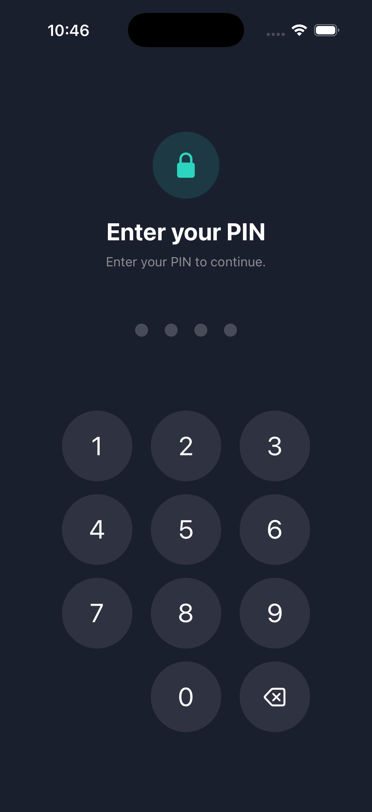
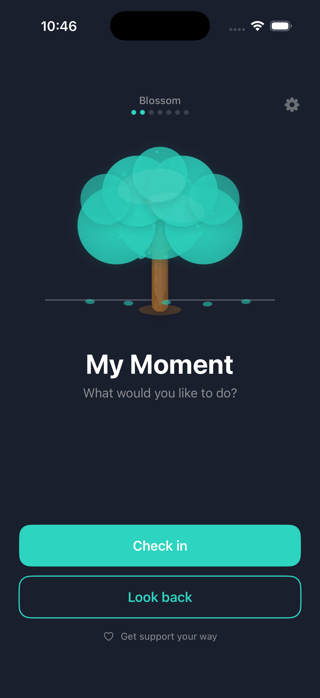
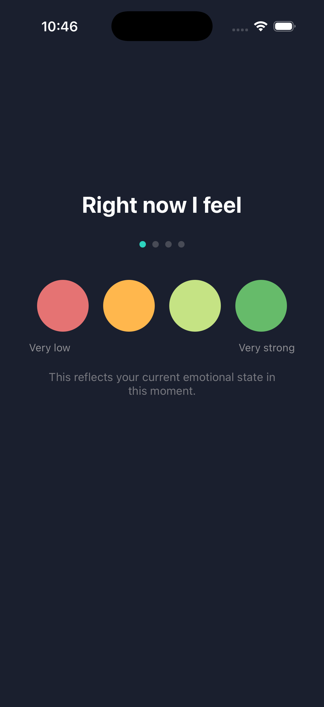
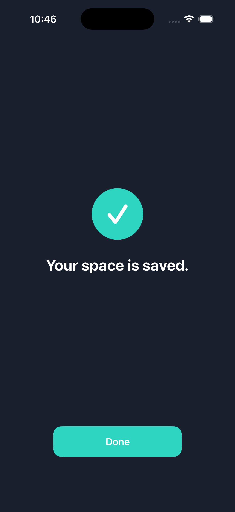
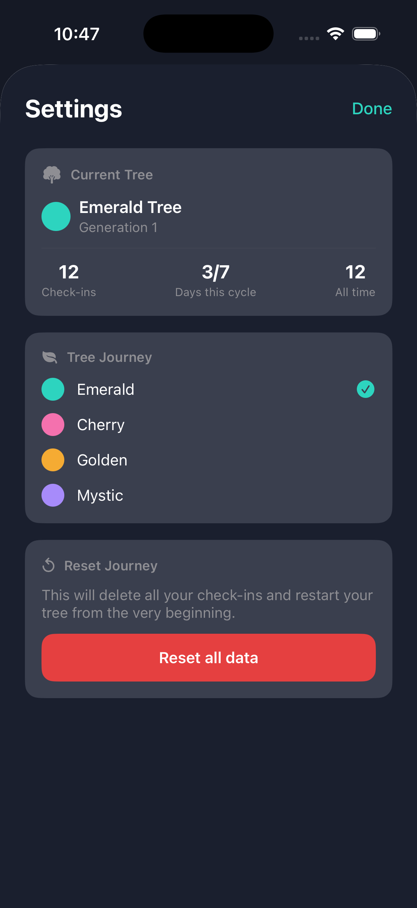

WORKSPACE / AW-CAREER-01
CAREER TRANSITION
00 · Overview
Technical depth. Project delivery focus.
MBA graduate with 3.5 years of experience at Capgemini, delivering technical
projects for Mercedes-Benz R&D across global teams.
PROJECT CARD
AW-PD-01
Workspace owner
Aditya Wanmali
Projects · Delivery · Technology
Objective
Expand into cross-functional project and delivery roles
Experience
3.5 years · Technical delivery
Delivery model
Agile · Scrum · SAFe
Location
Munich, Germany
3.5
Years at Capgemini
01/2022 — 06/2025
30+
Cutovers & migrations
Global delivery
10K+
Transactions per day
REST API DELIVERY
≈30%
Response-time reduction
Performance improvement
CHARTER / 01
CV-VERIFIED
I combine hands-on software knowledge with day-to-day delivery ownership. That
lets me translate technical constraints into clear plans, risks, decisions, and
stakeholder updates.
Foundation
Mechanical engineering + software delivery
Management layer
MBA, General Management
Direction
Projects connecting business and technology
01
Align
Turn stakeholder requirements into user stories, technical specifications,
milestones, and accountable actions.
02
De-risk
Surface dependencies and blockers early across engineering, security,
deployment, and regional teams.
03
Deliver
Coordinate readiness, release, smoke testing, follow-up, and status reporting
through completion.
Organisation
Capgemini
Bangalore, India
Role
Associate Consultant
Project Coordination & Technical Delivery
Client
Mercedes-Benz R&D India
Global collaboration
Period
01/2022 — 06/2025
3.5 years
WS-01
Project delivery
Global Dealer-Order Data Migration
Sole delivery lead coordinating Germany and regional teams worldwide.
Delivered
Evidence
+
Scope
Transfer dealer-order data to the appropriate manufacturing or operations
plant across multiple regions and time zones.
Key contributions
Completed more than 30 system cutovers and migrations.
Coordinated readiness checks, deployment teams, smoke testing, and
post-release follow-up.
Managed integration blockers, technical dependencies, firewall clearances,
and delivery risks.
Managed backlog refinement, sprint planning, reviews, milestones, risks,
blockers, and actions in Jira and Confluence.
Jira
Confluence
Scrum
Cutover
Risk
Stakeholders
WS-02
Technical delivery
Technical Development
Java, Spring Boot, Angular, REST APIs, performance, and engineering quality.
Delivered
Evidence
+
Scope
Build responsive interfaces and secure services for authentication and
high-volume data transfer.
Key contributions
Built REST APIs handling more than 10,000 transactions per day.
Reduced average response time by approximately 30%.
Created a reusable load-testing framework adopted across the project.
Developed an AI-assisted pull-request review tool for early quality and risk
checks.
Java
Spring Boot
Angular
REST APIs
Performance
AI review
PERSONAL PRODUCT / MMS-01
Pre-release prototype
SOURCE-BACKED CASE STUDY
My Moment Space: Local-First Wellbeing Journal
A native iOS and iPadOS prototype that turns four-question check-ins into local
history and a visual tree journey.
Swift
SwiftUI
SwiftData
Keychain
Product
Local-first wellbeing journal
Platform
iOS & iPadOS · local-only
Stage
Pre-release prototype
Validation
Simulator smoke test complete · physical device pending

PIN & local access
Four-digit entry gate stored through Keychain

Home & visual progress
Animated tree, cycle progress and primary actions

Four-question check-in
One of four wellbeing rating steps

Save confirmation
Clear completion state after local storage

Settings & journey control
Progress stats, tree themes and reset controls
01
Problem
Personal reflection can feel time-consuming and abstract. This prototype
explores a shorter check-in with local history and visual progress. User
impact has not yet been validated.
02
My contribution
I defined the product rules and user flow, documented architecture, risks,
quality and release readiness, implemented the SwiftUI app, and smoke-tested
the core flow in the simulator.
03
Current status
Pre-release prototype. Source implementation, Debug and Release compilation,
and simulator smoke testing are complete. Automated tests and physical-device
validation remain pending.
01
Set scope
Product flow, boundaries & rules
02
Design
Architecture, data & security
03
Build
SwiftUI & local persistence
04
Validate
Builds & simulator smoke test
05
Prepare release
Risks, tests & readiness checklist
Release preparation is documented; this is not a production release.
BUILT
Local product loop
PIN access, check-in, history, tree progression, settings, and reset are implemented.
TESTED
Simulator validation
Debug and Release builds compile; the core flow was smoke-tested in the iOS simulator.
DOCUMENTED
Delivery evidence
Scope, architecture, security risks, planned testing, and release-readiness checks are documented.
NEXT
Device and test validation
Restore automated tests, validate on a physical device, then close PIN-lockout and accessibility gaps.
DECISION / 01
Local-first
Keep moments, access control, and progress data on the device.
Reason
Removes backend and API dependencies from the prototype.
Trade-off
No sync, remote access, or server-side recovery.
DECISION / 02
Native iOS
Build one SwiftUI target with Apple-native frameworks and no third-party packages.
Reason
Keeps implementation and dependencies compact.
Trade-off
Apple-platform scope; physical-device behaviour remains pending.
DECISION / 03
Visual progression
Use a five-stage animated tree to represent progress across check-in days.
Reason
Makes continued use visible without relying only on charts.
Trade-off
The metaphor and accessibility still require user validation.
TECHNICAL / DEEP DIVE
Technical details
VIEW
Architecture, scope, risks, testing and technology
+
Architecture & local storage
ENTRY
Single local user
PIN-gated access on one device
→
APPLICATION
SwiftUI application
PIN gate · home and tree · check-in · history · settings
ACCESS
Keychain
4-digit UI access PIN
DATA
SwiftData
Local moment entries
PROGRESS
UserDefaults
Tree generation metadata
No backend · No external API · No analytics · No third-party packages
Verified scope, testing & validation
PIN, check-in, history, tree, settings and reset implemented
Debug and Release compilation completed
Core flow smoke-tested in the iOS simulator
Automated tests and physical-device validation remain next
Open risks & release readiness
No PIN lockout or cooldown
Accessibility and performance validation remain open
Final assets, signing and distribution are pending
User impact has not yet been validated
Full technology register
Swift
SwiftUI
SwiftData
Keychain
UserDefaults
Xcode
Git
Mermaid
View
All
Project delivery
Technical delivery
4 items
WP-01
Delivered
Global Dealer-Order Data Migration
Global coordination across Mercedes-Benz AG and regional teams.
Open case +
Objective
Route dealer-order data to the correct manufacturing or operations plant.
Contribution
Sole delivery lead coordinating readiness, teams, dependencies, and
stakeholder communication.
Outcome
More than 30 system cutovers and migrations completed.
WP-02
Delivered
Cutover & Release Coordination
Planning, readiness, deployment, smoke testing, and post-release follow-up.
Open case +
Objective
Move releases through cutover with teams, risks, and dependencies aligned.
Contribution
Tracked milestones, risks, blockers, and action items while coordinating
technical and regional stakeholders.
Tools
Jira · Confluence · Microsoft 365
WP-03
Delivered
High-Volume API Performance
Secure REST services supporting more than 10,000 daily transactions.
Open case +
Objective
Improve throughput and response performance for high-volume data transfers.
Contribution
Built and tuned Java/Spring Boot REST APIs and supporting integrations.
Outcome
Approximately 30% lower average response time.
WP-04
Delivered
Engineering Quality Enablement
Reusable load testing and AI-assisted pull-request review.
Open case +
Objective
Identify performance and code-quality risks before production.
Contribution
Designed a reusable load-testing framework and an AI-assisted code-review
tool.
Outcome
The testing framework was adopted across the project for earlier bottleneck
detection.
Cross-functional project coordination WS-01 Risk, issue & dependency management WS-01 Release, cutover & migration management WP-01/02 Milestone tracking & status reporting WS-01
CAP-02
Agile & stakeholders
Agile, Scrum & SAFe delivery WS-01 Stakeholder & partner management WP-01 Requirements & user stories WS-01 Business-technology alignment WS-01/02
Jira & Confluence WS-01 Java · Spring Boot · REST APIs WP-03 Angular · Integration · Authentication WS-02 Load & performance testing WP-04
01
2016 — 2021
Foundation
Bachelor's, Mechanical Engineering
Pune University, India
02
01/2022 — 06/2025
Delivery experience
Associate Consultant
Capgemini · Global delivery & software engineering
03
2025 — 2026
Management layer
MBA, General Management
Munich Business School
04
2026
Credential
Google Project Management Professional Certificate
Structured project-management practice
→
Next phase
Target
Cross-functional Project Delivery
Applying technical fluency to cross-functional project delivery.
MBA focus areas
Strategy
Finance
Marketing
Supply Chain Management
Accounting
Project Management
G
GOOGLE · 2026
Google Project Management Professional Certificate
Professional development supporting structured initiation, planning, Agile
delivery, execution, and real-world application.
Completed
{kind=link}
{kind=link}
{kind=link}
{kind=link}
{kind=link}